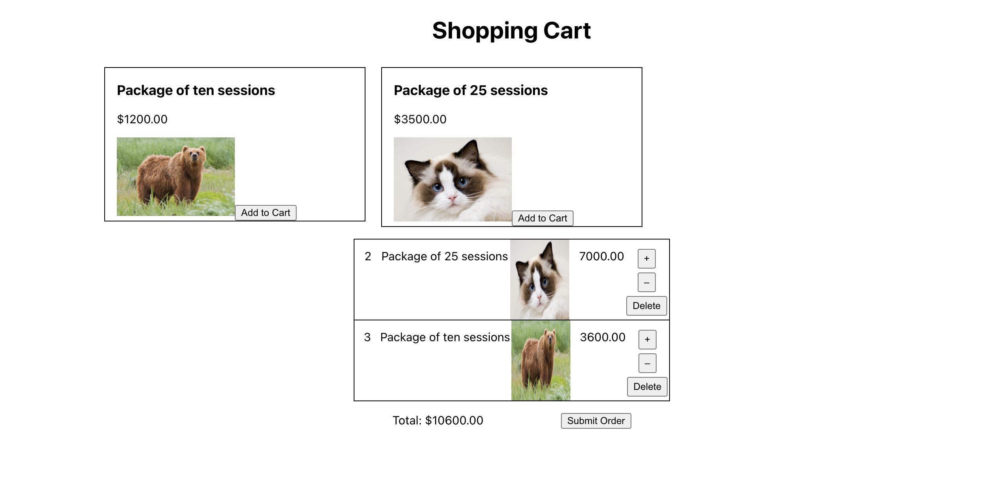
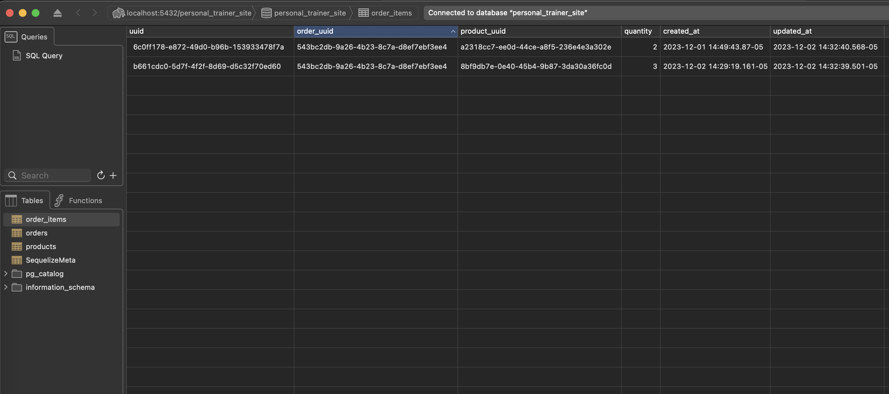
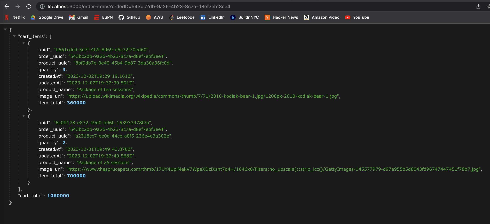

Full Stack Engineer | Paid Job | August 2023 – present
Project Details:
I anm currently building a full-stack website for my personal trainer.
The web app allows his clients to purchase exercise packages and apparel from him.
Shopping Cart, User Orders and Admin Products page complete so far.
Working with React.js, Node.js, PostgreSQL, and Sequelize.
Screenshot of an active shopping cart below the product catalog (left). The images of each
product are random as this data is not from the prod version. The middle image is the same
set of data as it appears in Postico. To avoid storing duplicate data in the DB, the product
info – such as the name and image – are not stored in Order_Items but rather are grabbed
from the Products table (using the product_uuid) and added to the data when its sent to the
frontend. The product's original price is multiplied by the quantity of the order item to
get the item price. The right image is the endpoint with the full cart JSON.



Timeline
I started working on this in August of this year. I began by doing research on fitness sites
to see what others were doing. I then took what I found in my research and what my trainer
told me he wanted and put them into a requirements document. Once he and I determined it was
the highest priority, I began working on the shopping cart.
Team:
The team is me solo. I have a collaborator but I only ask him to review and approve my Pull Requests
on gitHub. All of the code I wrote and tested myself.
Challenges I Face:
One of the challenges I faced early on was deciding how I was going to store and work with prices.
After looking at a few online examples of the best conventions for how people store prices, I
decided to go with them as integers throughout the site and then divide them by 100 only when
displaying to the user.
This is one of the first experiences I've had where I set all the coding conventions myself, so I
have to make sure I'm always doing it in the cleanest and easiest possible way.
At the beginning of the shopping cart implementation process, I was doing everything wrong
but didn't know it. I was doing the adding/subtracting of the price calculations manually
(rather than just multiplying the quantity by the unit price each time), storing prices in
the database, and was doing some of the math on the front end, which it turned out was not
the cleanest way to do it. At the beginning, my code looked incredibly complex like an
anger-inducing error waiting to happen.
After a few days of research on conventions, I found a cleaner way – moving all calculations
to the backend, taking all prices (except for product price and order total) out of the db,
and making the item_price and order_total only calculate at runtime, ensuring changes to the
cart automatically update the order total. If I kept the item_price on the order_items
model, I would need to manually update it each time. In the new way, all I have to do is
have the quantity go up or down by 1 and the price will be adjusted automatically when its
sent to the frontend.